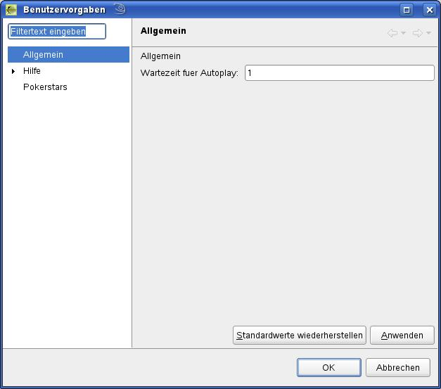
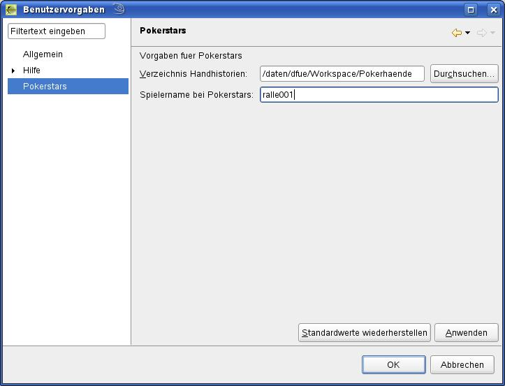

Bevor der erste Handverlauf importiert und nach gespielt wird, sollten die Grundeinstellungen vorgenommen werden.
Hierzu wählt man in der Menüleiste Fenster -> Benutzervorgaben.
|
 |
Im Bereich Allgemein wird die Zeit eingestellt, die zwischen zwei Spielzügen im Autoplay-Modus gewartet wird.
Wichtiger sind aber die Einstellungen unter dem Bereich der jeweiligen Pokerseite:
|
 |
Für PokerStars z. B. muss hier das Verzeichnis in dem die
Handverläufe gespeichert sind hinterlegt werden. Dieses
Verzeichnis wird später beim Import automatisch ausgewählt.
Über
den Button Durchsuchen erscheint ein Auswahldialog.
Bei „Spielername bei PokerStars“ muss der Name der für den Spieler am Tisch angezeigt wird angegeben werden. Wenn beim Abspielen der Hand die Funktion „läuft autom. bis zur nächsten eigenen Aktion“ angewählt wird, wird der hier angegebene Name verwendet.
Sind die Angaben gemacht, wird der Dialog mit OK verlassen und die Angaben gespeichert.